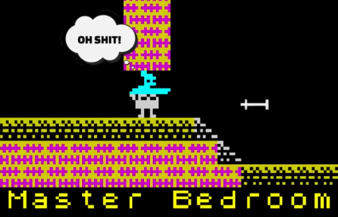
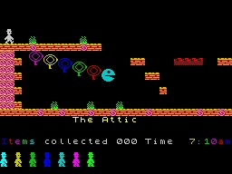

The Infamous Attic Bug
The Attic bug in Jet Set Willy is perhaps the most famous coding glitch in the Spectrum's history. It appeared in early copies of the game and was triggered when players entered a room called 'The Attic'. Players are greeted with a bizarre floating worm-like creature with Pac-Man as a head. Then, from nowhere, an arrow is launched from the left-hand side of the screen, shortly followed by another that is invisible to the player. This is where all hell breaks loose, but the unsuspecting player has no idea anything is wrong... yet!

The bug does nothing at first. It sits in wait, giving the player a false sense of calm and fooling them into thinking that all is well, oblivious to the horrors that await... then it strikes like a cobra attacking its prey! It's not until you reach a few more rooms on — The Kitchen, I believe — that things start getting weird. Graphical glitches, Mr Willy himself disappearing, objects floating in mid-air, and the music stops playing, replaced with strange ticking effects — some might see this last one as a blessing rather than a curse — but that's not the point here! It basically breaks the game and makes it impossible to complete. Some might argue that the game is already impossible to complete due to its absurd difficulty level!
The glitch is apparently caused by the unseen second arrow that fires when you enter the room. I don't fully understand it — I'm not a programmer — but it has something to do with the second arrow having an incorrect pixel y-coordinate. Instead of flying off the screen and disappearing as it should, it carries on through the game's code, corrupting it. Kind of poetic if you think about it: a rogue in-game item breaking loose from its constraints and ransacking its way through the game code, causing chaos wherever it goes. Like something out of a sci-fi film.
The hilarious thing about this is that Software Projects tried to pass it off as a 'feature'. They claimed it was intentional and added as a kind of hidden extra to confuse players and make them work that extra bit harder — as if the game wasn't hard enough already! They even suggested that players should make this room last on their list to visit and then find an alternative route back to the bedroom after collecting all the items, as the most direct route was not possible because of the bug.
They did eventually admit that it was a glitch, not a feature, and even published a POKE that corrected it. They also released three other pokes that corrected additional in-game problems:
POKE 59901,82
The Attic fix that corrects the second arrow by setting its pixel y-coordinate to 41.
POKE 60231,0
Removes a nasty from Conservatory Roof, making it possible to collect an otherwise uncollectable item on the far right.
POKE 42183,11
Moves the unreachable invisible item in First Landing to the same location in The Hall (where it is still invisible, but now reachable).
POKE 56876,4
Replaces a wall block with a floor block in The Banyan Tree, making it possible to access the room above (A Bit of Tree) from the right-hand side, which in turn makes it possible to reach the otherwise inaccessible items in Conservatory Roof via the ledge on the lower left in Under the Roof.
Over the years people have released their own versions of Jet Set Willy that not only fix these issues but others. My favourite is the 2015 bug-fixed version by the JSW community. I have it featured here on my website. I have the regular version and the version with a whole load of cheats pre-applied. The game has the following fixes:
1. Black instead of blue initial loading page. The reason for this is (2). It still retains the 'beeps', however they are played after the message, not before.
2. New loading screen to replace the 'loading' message present on the normal variants. It is compressed to save much time (down to 1485 bytes from 6912).
3. To further save loading time, the main code was also compressed (reduced from 32768 to 22459 bytes).
4. The decompress routine purposely returns to BASIC so it's easily savable as a standard 32768,32768 if desired. It also permits easy POKE entering. Loader (used BlockEdit to display as it did not fit into one Spectrum screen) — ignore odd spacing, it looks fine in reality:
5. Built a ready-made Microdrive version and a +3 disk image as well. Identical to the tape version except for a minor filename change for the disk due to +3DOS limitations.
6. The keypad entry was disabled as it seems superfluous these days.
7. Auto-pause has been disabled to prevent a lock-up when using an Interface 1. You can still pause the game via the usual keys, but it will not 'auto pause'. A patch was also applied to prevent said lock-up if the user decides to pause the game for any reason.
8. The code that causes the in-game tune to deteriorate with each loss of life was disabled. Although intentional, I've always considered it a bug in some way. I also noted that the length of each note slightly increases with each life loss.
9. The otherwise invisible and unreachable object in the First Landing was given a form and simply moved down a few characters to enable it to be collected. This 'fix' replaces the official Software Projects fix of moving it to The Hall (where it would still be invisible). This seems a better fix in some ways, as the object is kept on the screen it was intended to be displayed on.
10. The official Software Projects fix for The Banyan Tree was retained. This simply involves changing an earth cell to an air cell so the tree is climbable.
11. The official Software Projects fix for The Attic was also retained with a minor alteration. The starting position of one arrow was altered slightly so that both arrows actually appear and function as originally intended. Some fixes for this were noted to remove one arrow completely.
12. The minor auto-collect bug when Willy enters the Swimming Pool was fixed. There are a few ways of rectifying this; however, the simple method of changing the rope colour to cyan was used. The object form and placement remain unaltered where Matt placed it.
13. The 'double object' on The Beach was split into a single object, and the 'extra' one was moved further down the beach into the 'waves'. The thought behind this is that Willy is forced to use the conveyor to get that object.
14. The Conservatory Roof bug was fixed. The official Software Projects fix for this involves removing one fire cell so the object on the far right is just about reachable; however, in practice it is almost impossible to collect them all without any life loss. After studying other variants of this screen, a different fix was applied: the fire cells were moved into groups of two, followed by two objects, two more fire cells, and finally two objects.
15. The issue where Willy can jump from the top of the Watch Tower (and end up in The Off Licence as the 'Up' location is not defined) was fixed by shortening the ramp one block and moving the conveyor down one block. This fix is simple and also means Willy cannot jump high enough to leave the screen via the top.
16. The concern where Willy can jump up from Dr Jones Will Never Believe This and end up hitting a fire cell in We Must Perform A Quirkafleeg was reduced by adding a fire cell to the top of the structure, making it very difficult for Willy to accidentally jump up and out of this screen. In addition, the exit for 'up' from this screen was set to be the same screen, so if Willy does manage to leave via the top, he will reappear at the bottom.
17. The odd effect where Willy can jump through the top of Rescue Esmerelda and end up in The Ballroom was examined. It's unclear if this was intentionally left in or an oversight; however, it did not make logical sense to allow Willy to 'teleport' in such a manner. The fix simply involves adding some earth cells to the top near the conveyor to prevent Willy from being able to exit the screen by jumping up. We gave some thought to using the empty room 47 here as The Belfry, as per JSW2, but decided that would be an addition rather than a fix — something we wanted to avoid.